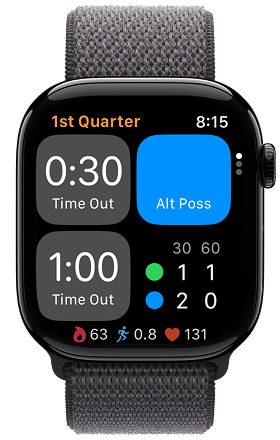
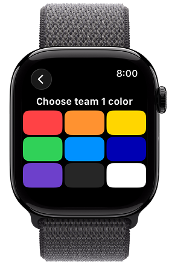
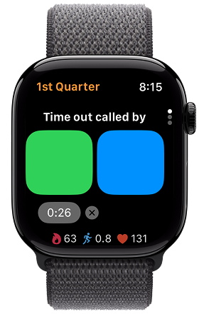
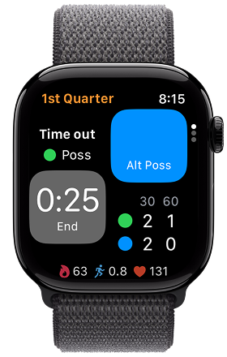
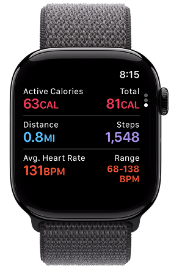

Possession and time-outs.On your wrist.
Hoop Ref helps youth basketball officials keep track of alternating possession and team time-outs during a game.
Possession, time-outs, and workout tracking are free. Hoop Ref Pro adds automatic workout saving to Apple Health with a one-time purchase.

Requires Apple Watch with watchOS 11 or later





Viewing workout metrics is free. Saving workouts to Apple Health requires Pro.
Features
Fast and easy to use
- Intuitive for basketball referees
- Just tap the teams’ colors and start officiating
- See alternating possession, time-out countdown, and time-outs used at a glance
Tracks alternating possession
- Tap a button or use double tap on supported Apple Watch models to alternate possession
- Haptics (wrist taps) confirm each change
Tracks time-outs
- Times 30- and 60-second time-outs
- Provides haptic feedback for first and second horn
- Notes inbound possession following time-out
- Counts time-outs used
Fitness & assists
- Workout tracking (calories, distance, steps, heart rate)
- Reminders to turn on Do Not Disturb or a Focus
- Haptic feedback for accurate 3-, 5-, and 10-second counts
Save game workouts to Apple Health
Automatically saves workouts to Apple Health after each game
Pricing
Free for everyone. Upgrade when you’re ready.
Free
$0
- Simple & streamlined
- Tracks alternating possession
- Tracks time-outs
- Fitness & assists
Pro
US$10
- Everything in Free
- Save workouts to Apple Health
- Automatic workout saving
One-time purchase in the App Store. Prices vary by country.
Frequently Asked Questions
Isn’t tracking alternating possession and time-outs the job of the scorer and timer?
Yes, but in youth games, the table is often staffed by volunteers who may still be learning. Hoop Ref helps officials keep their own record so they can help resolve questions when something gets missed.
What level of basketball is Hoop Ref designed for?
Hoop Ref is designed for youth basketball officials to track alternating possession and time-outs. Some competitions, especially at higher levels, restrict what officials can wear, so check your competition’s rules before wearing a watch while officiating. For example, section 1.4(I) of the National Federation of State High School Associations (NFHS) Basketball Officials Manual states, “Officials shall not wear jewelry, fitness bands or other items that are not necessary for performing their duties.”
Does Hoop Ref make any sounds?
The app plays haptics (wrist taps) for possession changes, time-out horns, and counting timing aids. Apple Watch requires that these also include sounds unless the watch is in silent mode. Most gyms are loud enough that the watch sounds are not audible.
How can I extend battery life?
Turning off workout tracking in Hoop Ref can help preserve battery life when officiating several games. Without an active workout, Apple Watch may return to the clock face after 2 minutes of inactivity, depending on your settings. To keep Hoop Ref visible longer without tracking a workout, open Settings > General > Return to Clock > Hoop Ref on your watch, choose Custom, then After 1 hour.
What activity type is used for workouts?
Hoop Ref workouts use the basketball activity type. While designed for playing basketball, that activity type is also a good fit for basketball officiating. We considered high-intensity interval training (HIIT), which better accounts for lulls in motion; however, it doesn’t use stride length calibration or steps as model inputs. The basketball activity type is also more intuitive when viewed in the Fitness or Health apps.
Can Hoop Ref track workouts even without permission to read health data or save workouts?
Yes. Tracking a workout session prevents Apple Watch from returning to the clock during a game. Without permissions, however, the workout won’t contain any health data or be saved to Apple Health.
What happens if I forget to end a game?
The workout automatically pauses after 30 minutes of inactivity.
What is your privacy policy?
This app does not collect, store, or share any personal data. Purchases and refunds are processed by Apple through the App Store. We do not receive or retain your payment information or any identifying data. For details on Apple’s data handling, see Apple’s Privacy Policy.
How do I contact support?
Experiencing a problem or have a suggestion? Let us know at support@hoopref.com.
How can I support Hoop Ref?
Enjoying Hoop Ref? Leave a review on the App Store to help other basketball officials discover the app.
Open this link on your iPhone or iPad to write a review.